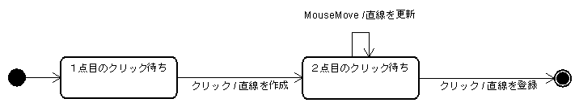
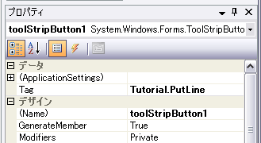
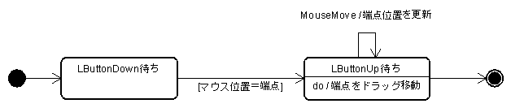

![[図11-01:ユーザーコントロール]](fig11_01.png)
～ OpenGLプラットフォーム「ヒスイ」 チュートリアル ～
「直線作図機能を作ってみよう (1)」の続きです。
「直線作図機能を作ってみよう (1)」では、マウスで2点をクリックするとその2点間に直線を作図する機能を作成しました。確かに作図できるのですが、2点目までクリックしないと画面に何も表示されないので、あまり使い勝手が良くありません。ユーザーインターフェイスを考えると、2点目のクリック待ちのときには直線のプレビュー表示（ラバーバンド）が欲しいものです。これを考慮すると、状態遷移図は次のように書き直されます。

これにしたがってコードを書き換えると、次のようになります。
using System.Windows.Forms;
[Hisui.Ctrl.Command]
static class Menu
{
[Hisui.Ctrl.Command("チュートリアル")]
static class Tutorial
{
[Hisui.Ctrl.Command("直線作図")]
static IEnumerator<Hisui.Ctrl.IOperation> PutLine( Hisui.Ctrl.IContext con )
{
var click1 = new Hisui.Ctrl.LButtonClick( con );
yield return click1;
// ① 直線を作成
var pt1 = click1.EventArgs.Location;
var p1 = con.View.Camera.ScreenToWorld( pt1 );
var polyline = SI.NewInstance<Hisui.Spatial.IPolyline>();
polyline.Add( p1 );
polyline.Add( p1 );
// ② ラバーバンド用のシーンを登録
var scene = Hisui.SI.CreateScene( polyline );
con.WorldScenes.Add( scene );
// ③ MouseMove で直線を更新
var click2 = new Hisui.Ctrl.LButtonClick( con );
click2.MouseMove += ( sender, e ) =>
{
var p2 = con.View.Camera.ScreenToWorld( e.Location );
polyline[1] = p2;
SI.Build( (Hisui.Core.IBuild)scene );
con.View.Refresh();
};
yield return click2;
con.Document.Entries.Put( polyline );
}
}
}
以下、順に解説していきます。
1点目のクリックが終わった時点で IPolyline エンティティを作成してしまいます。この時点では2点目の座標は得られていないので、始点・終点共に p1 の直線オブジェクトを作ります。
ラバーバンド用のシーンとして LineScene を登録します。ここで登録先が con.View.SceneGraph.WorldScenes ではなく、con.WorldScenes であることに注意してください。con.WorldScenes はこのコマンド実行中のコンテキストでのみ有効なシーンです。このコマンドから抜ける時点で con.WorldScenes は自動的にクリアされます。
2点目のクリック待ちでは、マウスの動きに合わせて直線を更新する必要があります。そのためには、click2.MouseMove イベントにイベントハンドラを登録します。このイベントはクリック待ち状態でのみ有効で、クリックが終わった時点でこのハンドラも解除されます。
ハンドラ中の処理では、現在のマウス位置からワールド座標に変換し、直線の終点座標を更新します。その際、((Hisui.Core.IBuild)scene).Build() というコードで表示要素を再構築しています。この処理がないと表示が更新されませんので注意してください。
※ Hisui.Core.IBuild インターフェイスについてはSDKドキュメント「BreathCount とビルドグラフ」を参照してください。
ツールバーの作成に入る前に、コマンドの名前について理解しておきましょう。
ここまででコマンドとして PutLine 関数を作成してきました。この関数は ICommand オブジェクトとしてヒスイ内部に登録されています。この ICommand オブジェクトには次の関数でアクセスすることが出来ます。
// ICommand オブジェクトの取得 Hisui.Ctrl.ICommand command = Hisui.SI.FindCommand( null, "Tutorial.PutLine" );
// コマンドの呼び出し Hisui.SI.Run( "Tutorial.PutLine" );
上記のように "Tutorial.PutLine" という文字列をキーとしてコマンドにアクセスすることができます。この "Tutorial.PutLine" というのがこのコマンドの名前になります。
（ちなみに、SI は Service Interface の略称で、ヒスイを薄くラップした関数群が定義されているファサードクラスです。）
コマンドの命名規則を理解するために、もう一度コマンドのコードを見てみましょう。
[Hisui.Ctrl.Command]
static class Menu
{
[Hisui.Ctrl.Command("チュートリアル")]
static class Tutorial
{
[Hisui.Ctrl.Command("直線作図")]
static IEnumerator<Hisui.Ctrl.IOperation> PutLine( Hisui.Ctrl.IContext con )
{ ... }
}
}
一番上の Menu クラスは命名規則からは無視されます。その理由は、Menu クラスは単にコマンドの定義を内包するだけの「入れ物」に過ぎないからです。その入れ子となっている Tutorial クラスと、関数である PutLine の名前をドットで区切って連結すれば、それがコマンドの名前となります。
では直線を作図するコマンドをツールバーから起動できるようにしましょう。まずプロジェクトに「新しい項目の追加」でユーザーコントロールを追加します。そして、下図のように ToolStrip コンポーネントを配置し、ボタンをひとつ追加します。
次に、追加したボタンの Tag プロパティにコマンド名 "Tutorial.PutLine" を入力します。

最後に、このユーザーコントロールに ToolStrip 属性を付けます。
[Hisui.Ctrl.ToolStrip]
public partial class UserControl1 : UserControl
{
...
以上でツールバーが追加され、ボタンに PutLine コマンドがバインドされます。ヒスイは Tag プロパティに設定されたコマンド名を読み取って、そのコマンドをボタンのクリックイベントにバインドするのです。
作図した直線を選択して右クリックすると、コンテキストメニューが表示されます。このコンテキストメニューに独自のコマンドを追加してみましょう。次のようなコマンド関数を作成します。
[Hisui.Ctrl.Command("端点の移動")]
static void MovePointOfPolyline( Hisui.Spatial.IPolyline self, Hisui.Ctrl.IContext con )
{
MessageBox.Show("コンテキストメニュー");
}
コマンド関数の第一引数として IPolyline エンティティを受けているところに注目してください。ヒスイはコマンド関数の第一引数をチェックし、このコマンド関数を IPolyline エンティティのコンテキストメニューに自動的にバインドします。起動してみて、コンテキストメニューを確認してください。
端点移動のオペレーションを作成します。仕様は、端点位置でマウス左ボタンを押し、そのままマウスをドラッグさせてボタンを離した位置に端点を移動するものとします。状態遷移図は次のようになります。

一点、注意事項があります。「端点」と言っていますが、エンティティは IPolyline なので、本当は頂点を3つ以上含む折線の場合もあり得ます。ですが、ここでは練習用と割り切って、IPolyline が2点しか頂点を含んでいないことを前提にプログラミングを進めます。3つ以上の頂点を含む折線に対応するのは是非読者の課題としてトライしてみてください。
では、まずはラバーバンドは考慮しないで作っていきましょう。
[Hisui.Ctrl.Command("端点の移動")]
static IEnumerator<Hisui.Ctrl.IOperation>
MovePointOfPolyline( Hisui.Spatial.IPolyline self, Hisui.Ctrl.IContext con )
{
var down = new Hisui.Ctrl.LButtonDown( con );
var up = new Hisui.Ctrl.LButtonUp( con );
yield return down;
yield return up;
var pt1 = new Hisui.Geom.Point2i( down.EventArgs.Location );
var pt2 = new Hisui.Geom.Point2i( up.EventArgs.Location );
var camera = con.View.Camera;
var eyeshot = camera.GetEyeshotLine( pt1 );
if ( eyeshot.Distance( self.StartPos ) < 8 * camera.LengthPerPixel ) {
self.StartPos += camera.ScreenToWorld( pt2 - pt1 );
}
else if ( eyeshot.Distance( self.EndPos ) < 8 * camera.LengthPerPixel ) {
self.EndPos += camera.ScreenToWorld( pt2 - pt1 );
}
}
camera.GetEyeshotLine(pt1) は pt1 を通過する視線を返します。また、camera.LengthPerPixel は１ピクセルあたりのワールド座標系での長さを返します。
以下のコードで、ラバーバンド（端点移動のプレビュー表示）が有効になります。
[Hisui.Ctrl.Command("端点の移動")]
static IEnumerator<Hisui.Ctrl.IOperation>
MovePointOfPolyline( Hisui.Spatial.IPolyline self, Hisui.Ctrl.IContext con )
{
var down = new Hisui.Ctrl.LButtonDown( con );
var up = new Hisui.Ctrl.LButtonUp( con );
yield return down;
var pt1 = new Hisui.Geom.Point2i( down.EventArgs.Location );
var camera = con.View.Camera;
var eyeshot = camera.GetEyeshotLine( pt1 );
if ( eyeshot.Distance( self.StartPos ) < 8 * camera.LengthPerPixel ) {
var p1 = self.StartPos;
up.MouseMove += ( sender, e ) =>
{
var pt2 = new Hisui.Geom.Point2i(e.Location);
self.StartPos = p1 + camera.ScreenToWorld(pt2 - pt1);
Hisui.SI.Build();
con.View.Refresh();
};
yield return up;
}
else if ( eyeshot.Distance( self.EndPos ) < 8 * camera.LengthPerPixel ) {
var p2 = self.EndPos;
up.MouseMove += ( sender, e ) =>
{
var pt2 = new Hisui.Geom.Point2i(e.Location);
self.EndPos = p2 + camera.ScreenToWorld(pt2 - pt1);
Hisui.SI.Build();
con.View.Refresh();
};
yield return up;
}
}
基本的には上記のコードに新しい知識はありません。ただし一点だけ補足すると、Hisui.SI.Build() を呼び出している部分は IPolyline エンティティの表示要素の更新を意味しています。この命令がないと表示が更新されませんので注意が必要です。それ以外は今までの知識で理解できるはずですので、読み解いてみてください。
※ Hisui.SI.Build() 等についてはSDKドキュメント「BreathCount とビルドグラフ」を参照してください。
このコマンドでは、端点を連続して移動することができません。一度端点を移動したら、次は再びコマンドを起動しなおす必要があります。しかし、コマンドによっては連続してオペレーションを繰り返したい場合もあるでしょう。そのためには、Command 属性を次のようにします。
[Hisui.Ctrl.Command( "端点の移動", true )]
第２引数は iterative かどうかを指定する引数で、true を指定すると繰り返しコマンドになります。連続して移動操作ができることを確認してみてください。なお、コマンドから抜けるには ESC キーを押します。
Copyright © 2007, 株式会社カタッチ
http://www.quatouch.com